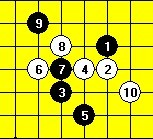
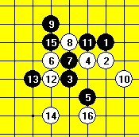
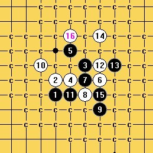
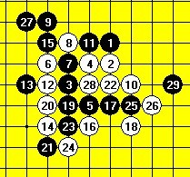

明教护法极地剑客智运会自评2
#1 明教护法极地剑客智运会自评2 作者：忧郁的双眼 发表时间：2009-11-23 21:33:07
09智力会自战棋评之第一局.
第一轮对云南周阳~网名肥国乃乃~
开蔬星,他黑我白

开局双方都走的很快,他走完这个9的时候,我知道机会来了,很快落了10.
对手考虑了几分钟,老实的走了一手~接着马上落了12,13~
对手走完13,我觉得我必胜了.直接落了14,
走完14~对手15无奈之举~防中间则简单抓33禁~

16在这里直接活三进攻是不行的,想了一下~发现有妙点~16开始妙手进攻.17只有唯一一套解法~

对手17想了一段时间~走出了最强的一套走法~17活三后~18.22必须!

当时看了看棋钟,我白棋走到这里只花了7分钟.直接开始暴力连杀~,轻敌很可怕!!!
30手其实落17下面两格~和26下面都可以必胜的~这里走急了,没仔细核算走了个自认能杀的棋~走完才发现有简单杀~~结果自己冲四活三攻绷了~自残了~......
总结:没听XX的话~每落一步应该停下来核算一遍的~即使是你觉得已经杀了!06对小白~07对刘永生也是如此~看来这次又这样了............
［ 失落刀 于 2009-11-23 22:15:24 时花20金币送鲜花一朵］
［ 逆刃 于 2009-11-23 22:35:25 时花20金币送鲜花一朵］
#2 Re:明教护法极地剑客智运会自评2 作者：叶昀 发表时间：2009-11-24 23:21:37
 没钱，就不给小眼你花了
没钱，就不给小眼你花了
#3 Re:明教护法极地剑客智运会自评2 作者：叶昀 发表时间：2009-11-24 23:32:50
明教护法极地剑客智运会自评
明教护法极地剑客
 听说遗少杀了他了
听说遗少杀了他了
明教护法还是他